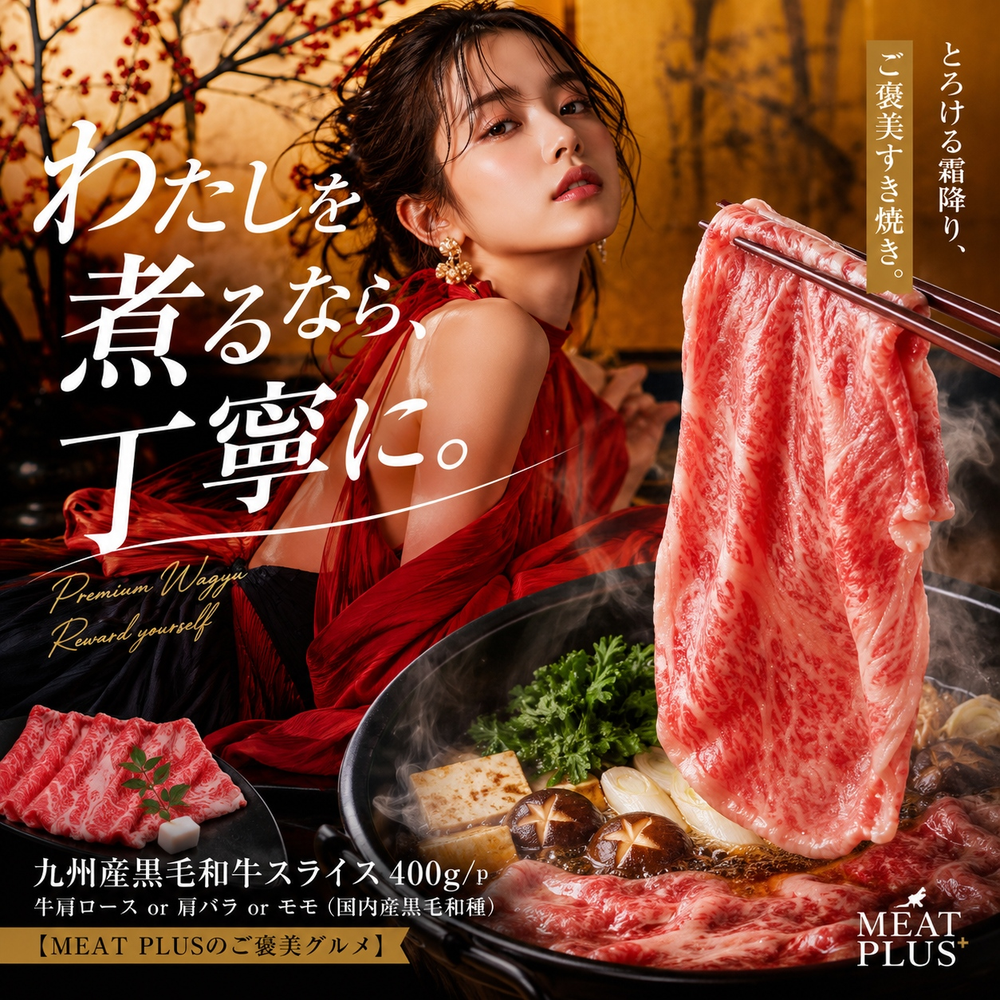
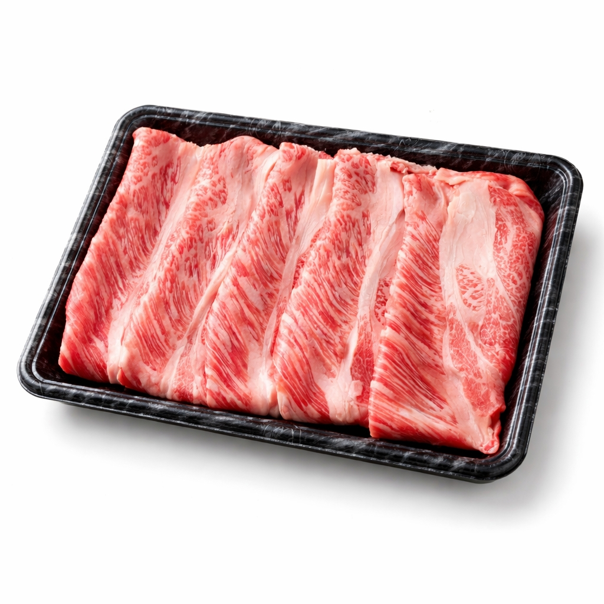
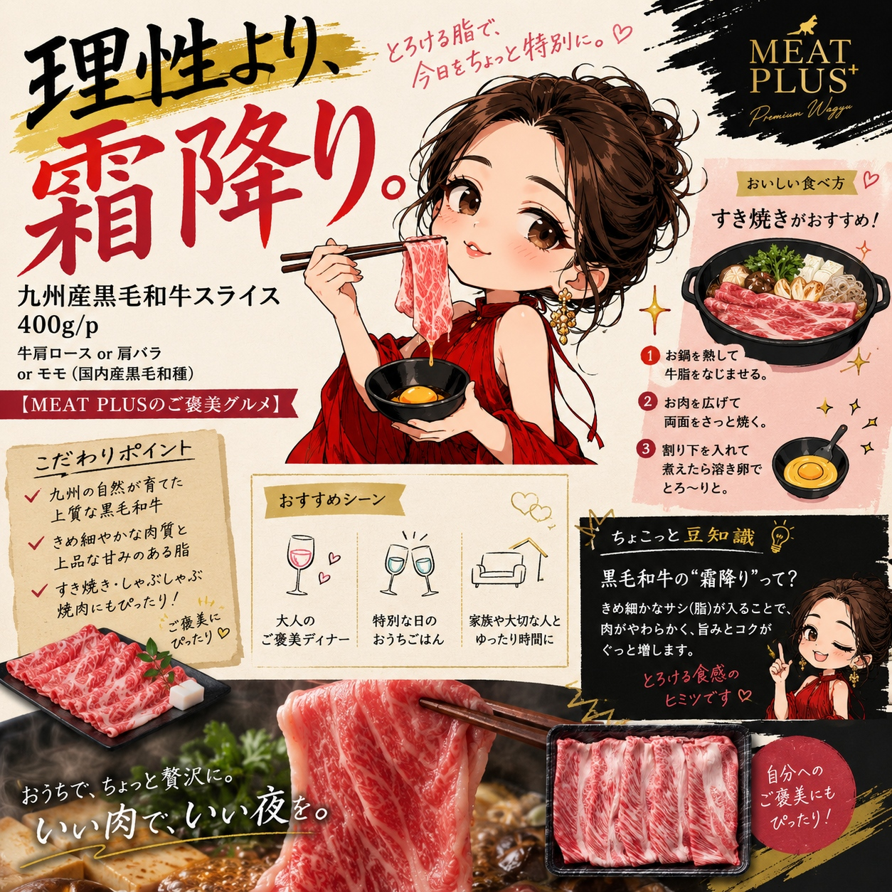
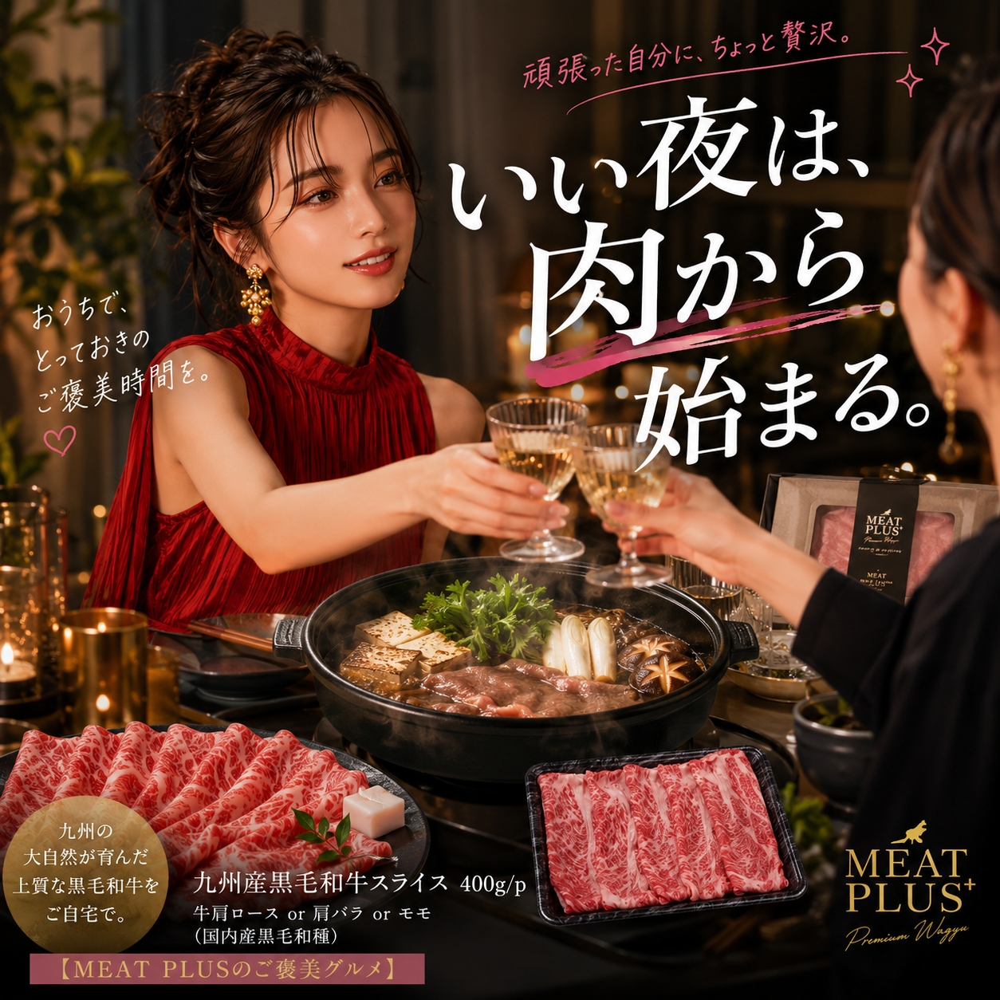

SCENE 01

a 牛肉
【食卓が笑顔になる、九州育ちのとろける霜降り和牛。】
今夜はちょっと特別な食卓にしませんか。家族みんなの笑顔が広がるすき焼き、大切な人との記念日に楽しむしゃぶしゃぶ。そんな幸せなひとときを、九州の雄大な自然が育んだ黒毛和牛が彩ります。お届けするのは、厳しい基準をクリアしたA4～A5等級の黒毛和牛のみ。きめ細やかなサシ（霜降り）が織りなす美しい赤身は、見た目にも食欲をそそります。口に含めば、上質な脂がとろけ出し、和牛本来の濃厚な旨みと甘みが一気に広がります。使用する部位は、旨みが凝縮された肩ロースや肩バラ、または赤身の美味しさを堪能できるモモ。すき焼きやしゃぶしゃぶはもちろん、さっと焼いて焼きしゃぶに、あるいは贅沢な牛丼や肉じゃがにも。一枚一枚丁寧にスライスしているので、様々なお料理でその真価を発揮します。使いやすい量を選べるのも嬉しいポイント。冷凍でお届けしますので、お好きなタイミングで本格的な和牛の味わいをお楽しみいただけます。九州が誇る極上の味わいで、あなたの食卓をもっと豊かに、もっと美味しく。心満たされる贅沢な時間をお過ごしください。
公式サイトへ移動します。価格・在庫・配送条件は移動先で最終確認してください。



PRODUCT INFORMATION
牛肩ロースor肩バラorモモ（国内産黒毛和種）
FAQ
お召し上がりになる前日に冷蔵庫に移し、ゆっくりと時間をかけて解凍するのがおすすめです。ドリップ（肉汁）の流出を最小限に抑え、お肉本来の風味や食感を損なわずに美味しくいただけます。お急ぎの場合は、パックのまま氷水につけて解凍する方法もございます。
はい、ご利用いただけます。お中元やお歳暮、内祝い、記念日のプレゼントなど、大切な方への贈り物として大変喜ばれております。ご家庭での特別なごちそうとしてはもちろん、感謝の気持ちを伝えるギフトとしてもぜひご活用ください。
MEAT PLUS OFFICIAL SHOP
仕入れ・加工・梱包・発送まで自社で行うMEAT PLUSの公式オンラインショップでご注文いただけます。
公式オンラインショップで購入する